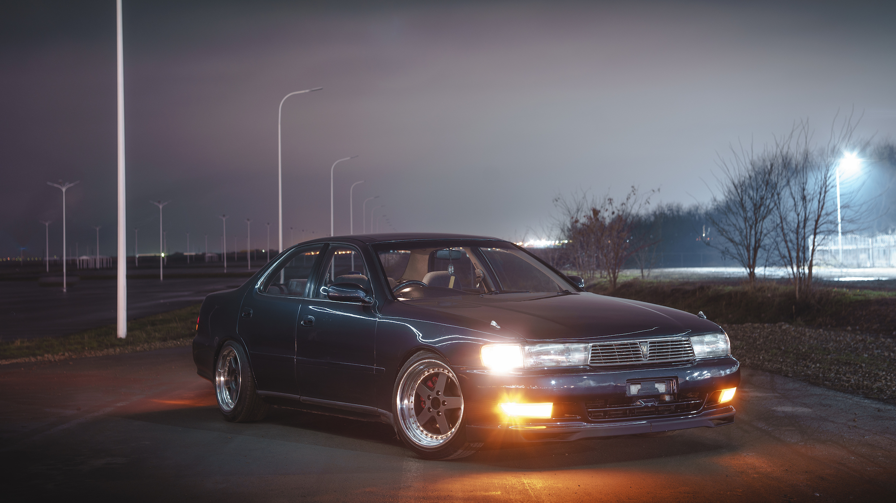
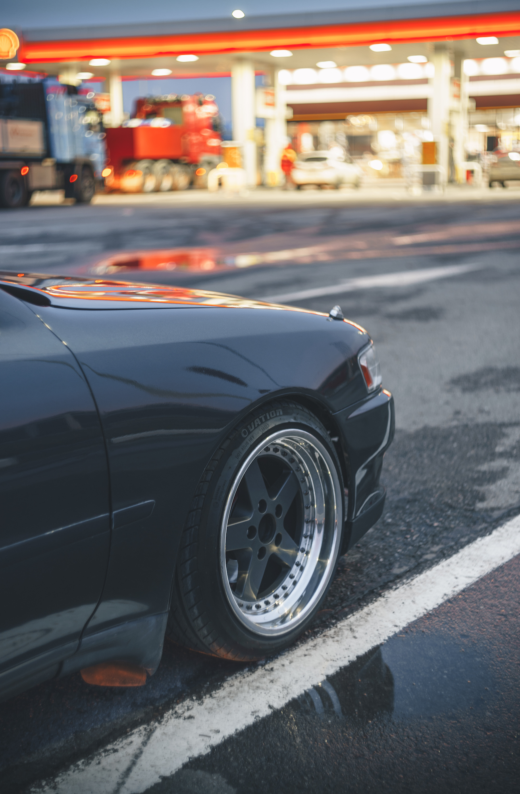
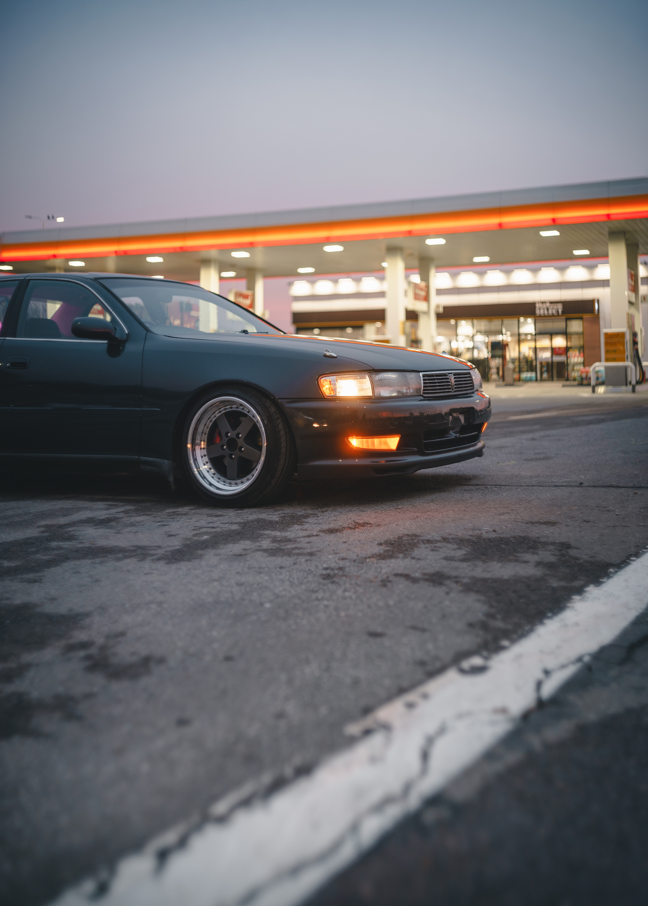
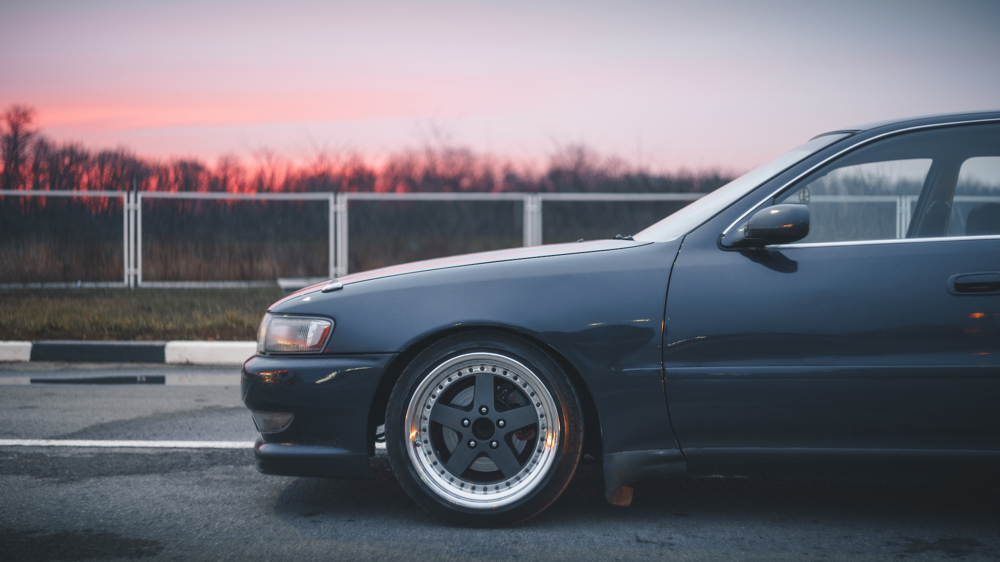
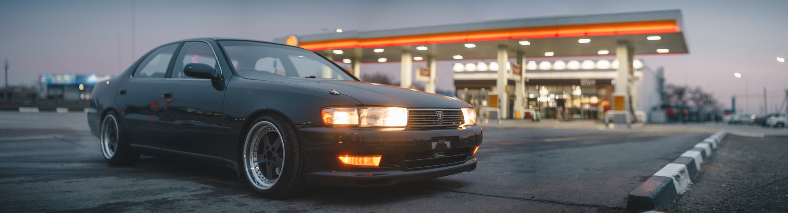
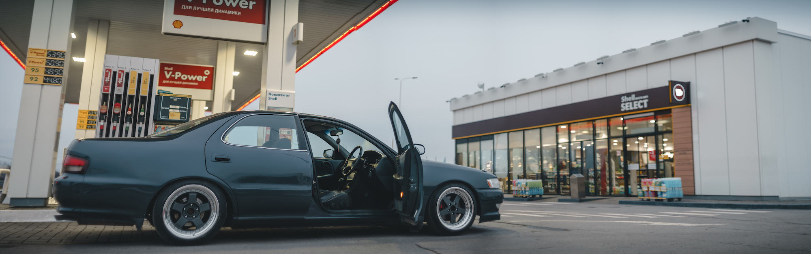
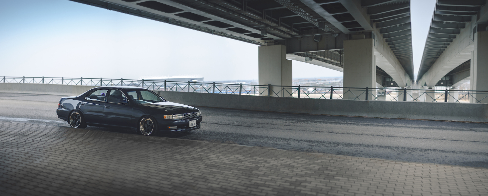

Toyota Cresta
Вам знакомо, когда при упоминании о каком-либо маркообразном автомобиле, собеседник тут же интересуется, овощь ли это или нет? 😏 (для не посвящённых: вопрос о наличии турбонаддува). Но на мой взгляд, чем больше лет уже проходит с момента выпуска, тем большую ценность начинает играть не конкретная модель двигателя, а общее состояние автомобиля. И лично мне поездка на двухлитровой обслуженной кресте в околостоковом состоянии может принести куда большее удовольствия чем на турбо-корче 😌






